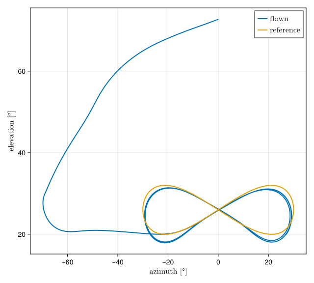

Examples - figure-of-eight
The runs on this page fly the figure-of-eight pattern at constant tether length. How to install and start the examples is described on Examples - general.

Figure-of-eight runs
simple_fig8.jl
Flies the figure-of-eight pattern at constant tether length. The kite starts parked at about 73° of elevation and reaches the pattern through a four-phase entry (park, dive, hold, transition). Once it is engaged, the attractor guidance of FigureEightController commands a course and the CourseController tracks it with the steering tape. All tuning parameters come from the selected project and data/fc_settings.yaml (FC_Settings). The run writes an Arrow log to output/, named after the project's log_file setting, prints the quality metrics of fig8_metrics and plots the results when it is done.
simple_fig8_live.jl
The same flight as simple_fig8.jl, with identical logging and scoring, but shown live in the KiteViewers 3D window while it flies. The simulation loop drives the viewer directly; apart from that the two scripts are kept identical.
simple_fig8_plots.jl
Re-plots the last log of simple_fig8.jl without simulating again: the flown pattern in the azimuth–elevation plane against the reference lemniscate, a stacked time series (cross-track error, elevation, heading and course, steering, tether force and length) and the aerodynamics, as selected with select_plots.jl.
simple_opt_fig8.jl
Uses the same plant, entry and inner loop as simple_fig8.jl, but the reference path comes from the AWETrim optimizer instead of from the lemniscate parameters f8_a and f8_b. It asks for the power-optimal reel-out path for the run's own wind and winch, installs it with set_path! and flies it at constant tether length. The lemniscate is still built as the initial guess of the optimizer and as the reference the result is plotted against. The script starts the optimizer server itself if none is running, and reads its settings from data/traj_opt.yaml. It is the rehearsal for simple_opt_reelout.jl.
optimize_path.jl
A walk-through of the AWETrim client: it asks the optimizer for one path and plots it against the initial guess. The conditions of the request are typed in to show its structure; a path that is to be flown must be optimized for the run's own wind and winch, which is what the runs above do.
stability_fig8.jl
A disk-margin stability analysis of the linearized course-control loop of simple_fig8.jl: the gain-scheduled PD controller of CourseController, closed around the steering actuator and the identified turn-rate law of the V3 kite (turn_rate_coeffs), with the guidance as outer loop. It prints the gain, phase, delay and disk margins over the operating range of the selected project and needs ControlSystemsBase.
Parking
simple_auto_parking.jl
Flies an attitude-stabilized parking maneuver. The wing is settled at a fixed depower setting and held at constant tether length, while a heading PID, gain-scheduled with 1/v_app, regulates the heading to zero so that the kite does not drift away from straight-up parking. The run logs to output/tmp_auto_parking.arrow and prints the RMS error of the heading regulation and the ripple of the angle of attack.
simple_auto_parking_plots.jl
Re-plots the log of simple_auto_parking.jl without simulating again: reel-out speed, tether force, elevation, heading, angle of attack, the lift-to-drag ratios and the commanded versus the actual steering.